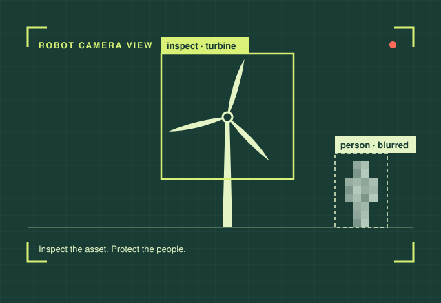
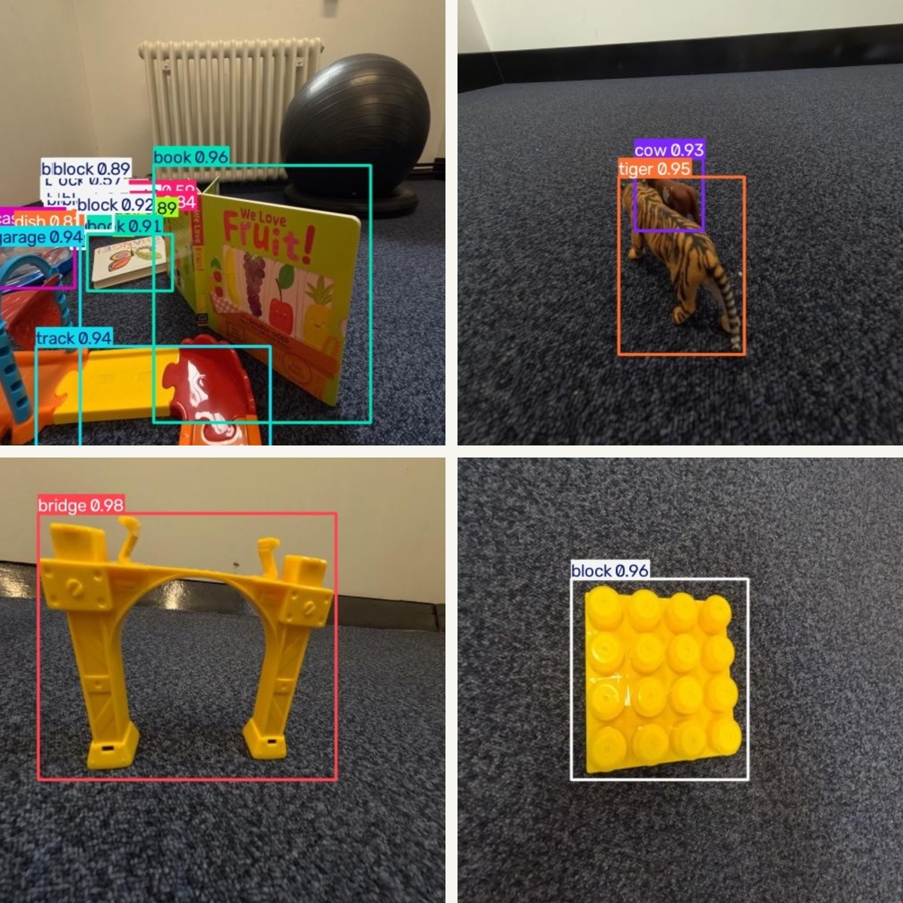
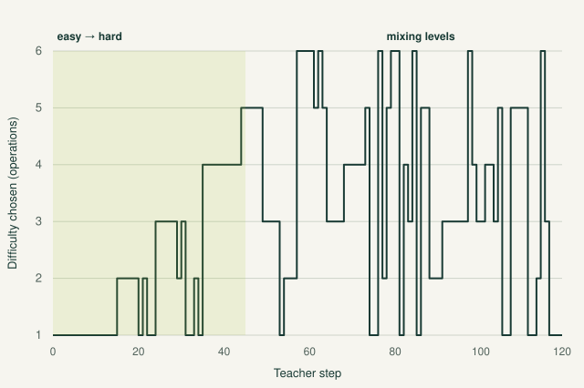
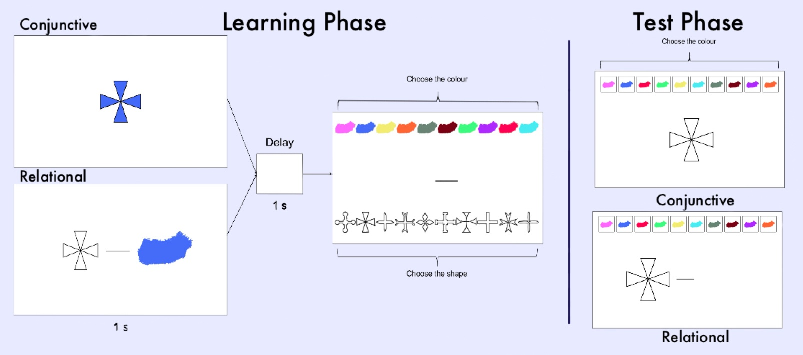

Perceiving the world
Learning-based computer vision and object detection for robotic perception.
Doctoral trainee in the EPSRC RAINZ CDT, currently completing first-year robotics training at Manchester before my PhD project on privacy-preserving inspection robots at Glasgow from September 2027. Previously, toy recognition for a child-language robot.

I started in psychology at Edinburgh, coding caregiver–child conversations, collecting EEG and eye-tracking data in developmental studies, and running my own experiments on memory and perception.
My MSc at Abertay turned that interest into engineering. For WordMate, a robot designed to talk with young children about their toys, I hand-annotated 1,176 images and trained the detector that tells it what’s in front of it.
I’m now in the first year of the RAINZ CDT, training in robotic systems, computer vision and ROS 2 at Manchester. From September 2027, my PhD at Glasgow will focus on the other side of perception: inspection robots that monitor net-zero infrastructure without intruding on the people who work and live around them. I speak English, German and Turkish.
My research interests span embodied AI, computer vision, autonomous systems, perception and human–robot interaction. Long term, I want to build robots that can work around people safely and respectfully, in research or industry.
Learning-based computer vision and object detection for robotic perception.
Human–robot interaction informed by psychology and human-centred research.
Inspection of net-zero infrastructure that respects workers and surrounding communities.
From studying how people perceive and remember, to building how robots see.

UPCOMING PHD PROJECT · UNIVERSITY OF GLASGOW · FROM SEPTEMBER 2027
Privacy-Preserving Robotic Inspection of Net-Zero Infrastructure
My PhD project will investigate how autonomous inspection robots can monitor net-zero infrastructure while protecting workers’ and communities’ privacy, bringing together robotics, computer vision and responsible AI.
The mission
MSC ROBOTICS TEAM DESIGN PROJECT · 2026–27
A Leo Rover that finds, collects and sorts coloured objects
A five-person team project to build a mobile robot with an arm that searches for coloured objects, picks them up, brings them back to its start point and places each one in the matching bin.

MSC RESEARCH PROJECT · 2026
Toy recognition for child–robot interaction
Developed and evaluated a YOLO11-based perception system for WordMate, an AI-supported child language-learning project. I assembled and annotated 1,176 toy images, audited labels, and evaluated a 43-class detector using five-fold cross-validation.
What I learned: Better training labels improved recall—dataset quality mattered alongside the choice of detector.
Methods, findings & limitations →
MSC MODULE PROJECT · CMP511 · 2026
Can a teacher algorithm choose what a model should learn next?
Built a teacher–student setup in which bandit algorithms (UCB, Thompson sampling) choose which arithmetic tasks GPT-2 trains on, compared against uniform and easy-to-hard baselines. The teacher learned a curriculum but did not beat uniform sampling; easy-to-hard did worst.
Why a negative result is useful: when the reward signal is only weakly tied to the real goal, a smarter curriculum changes how a model trains, not what it can do.

BSC DISSERTATION · 2025
Compared memory for integrated shape–colour combinations with associations between separate features. The study analysed 82 participants across immediate, one-day and seven-day recall conditions.
Forgetting rates did not differ between binding types by seven days, and self-reported memory did not predict actual performance.
Takeaway: Initial recall and subsequent forgetting need to be examined separately; a stronger immediate score does not necessarily mean slower forgetting.
Read project summary →A third-year group project comparing hand preference and performance in 60 adults using LEGO-style construction tasks. Both left- and right-handed participants favoured their dominant hand; the study did not support a general right-hand preference for precision grasping.
Read project summary →ROS 2 · Linux (Ubuntu)
Intel RealSense depth camera
GoPro data capture
Python · PyTorch · R · SQL · SPSS
Jupyter · Google Colab
Git/GitHub · Markdown
Computer vision · YOLO (Ultralytics)
Hugging Face Transformers
Multi-armed bandits · Cross-validation
Dataset annotation (Roboflow)
Experimental design · Statistics
Behavioural data analysis
EyeLink eye-tracking · EEG
UX research · Gorilla · Praat
English (C2) · German (C2)
Turkish (B1)
Year 1 robotics training, University of Manchester
PhD at the University of Glasgow from September 2027
Abertay University · Distinction
University of Edinburgh · First-Class Honours
2026 · Professional development alongside my MSc.
View certificate (PDF) →Two-day event · May 2026
8 CPD hours/points certified by The CPD Certification Service; provided by The Data Lab.
2025 · My line drawing of an eye-tracking setup, shared on Figshare under CC BY 4.0 for others to reuse in methods figures and posters.
Happy to talk about robot perception, human–robot interaction or privacy in robotics.